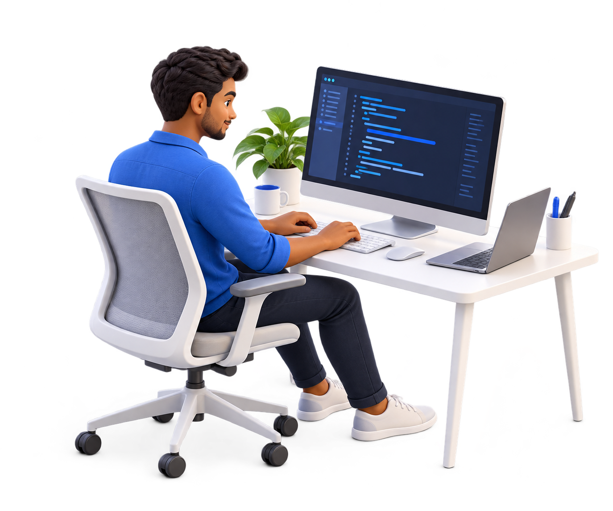

FULL STACK DEVELOPER
Hi, I'm Nishan.
I build connected
software.
From thoughtful interfaces to backend systems and AI. I bring the pieces together to build applications people can use.
TechSmew Technologies · Coimbatore, India

WHAT I WORK WITH
Across the stack.
Connected by purpose.
Select an area to explore the tools
and workflows I work with.
THE HUMAN SIDE OF SOFTWARE
Interfaces that make systems useful.
React interfaces for business applications and document review workflows, connecting user actions to backend services.
A LITTLE ABOUT ME
Curiosity, meet code.
I come from a physics background and now work in software development at TechSmew Technologies. My experience spans full-stack applications, microservices, and AI document-processing workflows.
I enjoy understanding how systems fit together. My development toolkit includes Git, Claude Code, Codex, and Google Antigravity.
More about me on LinkedIn